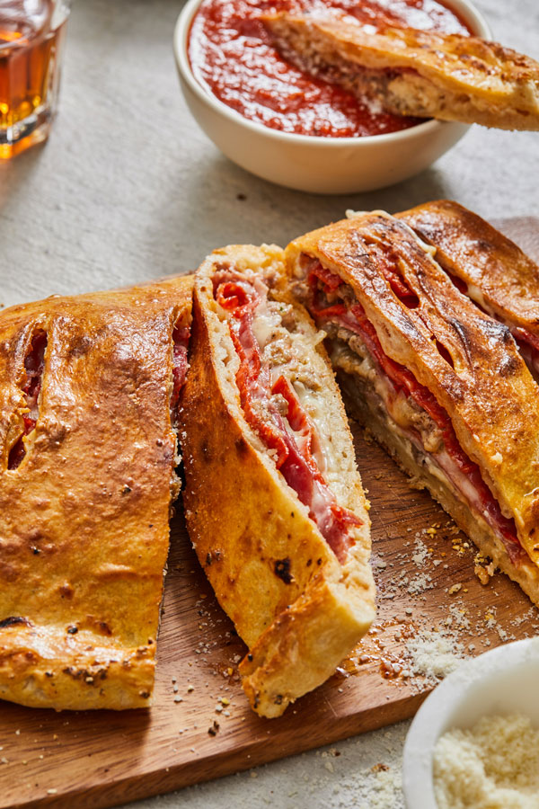

Calzone

Description:
The classic from italian cousine, the calzone, presented by allrecipes.com
Ingredients
Dough:
- 1 (.25 ounce) package active dry yeast.
- 1 cup warm water.
- 1 tablespoon olive oil.
- 1 teaspoon white sugar.
- 1 teaspoon salt
- 2 ½ cups all-purpose flour, plus more for dusting
- 1 teaspoon olive oil.
- 1 large egg, beaten.
Filling:
- 1 ½ cups shredded Cheddar cheese.
- ½ cup ricotta cheese.
- ½ cup diced pepperoni.
- ½ cup sliced fresh mushrooms.
- 1 tablespoon dried basil leaves.
How to make Calzones
- Make the dough, knead, and let rise.
- Make the filling and chill in the fridge.
- Punch the dough down and divide into two pieces.
- Roll the dough out into circles and fill.
- Fold the dough and use a fork to seal.
- Brush with a beaten egg and bake until golden brown.